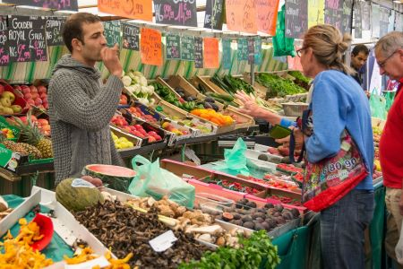
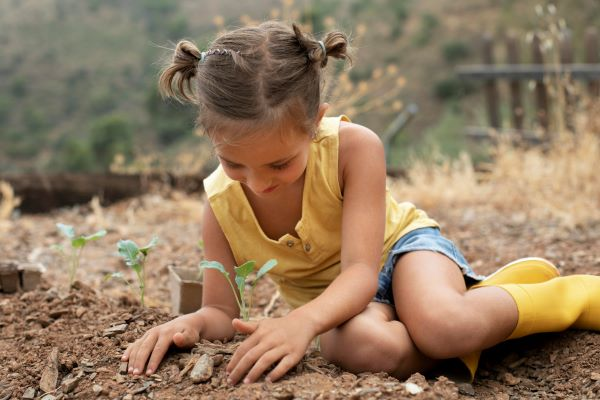

Depuis 2014, le potager participatif du quartier de la Marine propose à ses habitants un moment de connexion
avec la nature en milieu urbain.
Nous proposons 20 variétés de fruits et de légumes en fonction des saisons.
EVENEMENTS
Marché des quatre chemins, tous les dimanches de 7h30 à 13h

Nous vendons une partie nos récoltes à un prix très abordables, pour que tous le
monde en profite.
Ateliers décoration de citrouille
Venez participer en famille aux ateliers de décoration de citrouille pour
Halloween ! Le 12/10 et et 15/10 de 15h à 17h.
Enfant à partir de 5 ans, inscription obligatoire.
Atelier les “mini jardiniers”, tous les mercredis de 10h à 11h

Tout au long de l’année les enfants peuvent participer à un atelier pédagogique
en découvrant les diverses plantes et créer un herbier.
Atelier réservé aux enfants de 2 à 5 ans accompagnés d’un parent.
Inscription obligatoire.